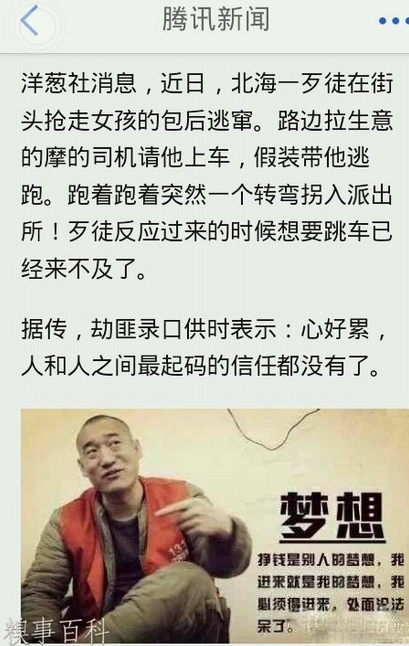

Conversation with 81184027 at Mon 21 Apr 2014 12:14:56 PM CST on 154115835 (webqq)
(01:03:40 PM) 光: 兰小欢博士写过一篇文章，谈到和大众通常的印象相反，恐怖分子普遍出身不差，且受过良好教育：
俗话说，光脚的不怕穿鞋的，那这些恐怖分子应该是很穷的吧？这似乎也符合经济学道理，人穷命贱才更容易轻生啊，有钱人都忙着享受生活呢。这些人肉炸弹们应该也没受过什么教育吧？要不脑子怎么不开窍呢？穷且没文化，这恐怕是大多数人对恐怖分子的印象。
外 国的恐怖分子咱不认识，可以想想咱们前朝皇上眼中的“恐怖分子”们：“为共和革命而牺牲的第一人”陆浩东，富家子弟，受教育良好；刺杀摄政王载沣的汪精 卫，商人子弟，日本留学生；女的有秋瑾，官二代，日本留学生……这么想下去，好像这有名的“恐怖分子”里头真还没什么泥腿子。再想想，911开飞机撞大 楼，那可是顶尖的技术活，别说是文盲了，弄个工程师过去也且得培训好些日子呢。至于小规模的爆炸活动，安装炸弹，选址，选时机，引爆，还得避过政府情报武 装人员的围剿，想成功，那真得是人才。
事实上现代的恐怖分子们也确实不是又穷又没文化的人，而大多是中产阶级和受过良好教育的人。 以大家熟悉的巴勒斯坦人体炸弹为例，在有资料记载的哈马斯和伊斯兰圣战组织的48个人体炸弹中，穷人只占不到15%，而同一时期约旦河西岸和加沙地区的人 口中，贫困人口占30%以上。在人体炸弹中，中学以下教育水平的只有2%，而同一时期和同一地区的人口中，中学以下教育水平的占到将近50%。可见与普通 人群相比，恐怖分子一般又有钱又有文化。
这事儿实际上并不难理解。“恐怖活动”虽然极端，但说到底是一种政治行为，恐怖分子们一般有很多政治诉求。而与这些诉求相比，穷人的首要任务是吃饱饭。搞什么对美帝国主义的圣战？还没吃饱呢，不撑。
对 穷人来说，恐怖活动其实和民主投票差不多，都离自己的生活比较远。偶尔听听知识分子们宣传，有道理的时候跟着起起哄，没道理的时候随着骂两句，不太热衷。 但受过教育的人就不同，“有更高的精神追求”，激动起来可就不得了。先识“大义”，而后“凛然”，饿得獐头鼠目笨得目不识丁，“凛然”不起来。
在 约旦，摩洛哥，巴基斯坦，土耳其进行的一项民意调查中，有这样一个问题：“你怎么看待在伊拉克针对美国人和其他西方人的自杀性爆炸事件？你个人认为这些行 为是有正当理由的么？”在所有四个国家中，受过高中以上教育的人回答“有道理”的比例都比低教育人群高的多。而在约旦河西岸和加沙地带进行的一项民调中， 与文盲相比，高中以上学历的人更加支持对以色列的目标进行武装攻击；而与无业人员相比，学生们更支持类似攻击。
这些结果不奇怪，911事件后在电视机前欢欣鼓舞热泪盈眶鼓掌欢呼的中国人民当中，农民工少，大学生多。
但是，为什么？为什么这些受过教育的人反而更加极端呢？不妨先再来看另一项相关研究。
恐 怖活动的根源是仇恨，但仇恨又是怎么来的呢？在对犯罪的研究文献中，有一类犯罪叫“仇恨犯罪”（hate crime），就是那些针对被仇恨群体的暴力行为。比如美国早年的3K党，就是白人对黑人的仇恨犯罪。1997年发表的一项对德国青年袭击外国人的仇恨犯 罪的研究中，研究者发现：这类犯罪发生在“东德”的比例远远比在“西德”高。当然这可能是经济原因，东边儿刚推倒柏林墙不久，还很穷，所以可能各类犯罪可 能都多，仇恨犯罪也并无特殊之处。然而，东德也不是铁板一块，如果经济发展水平是原因的话，那在东边的发达地区的犯罪率应该比同在东边的欠发达地区低，然 而事实并非如此。
实际上，已经有很多研究指出，仇恨的产生，与专制的政治环境有关。而在一个专制的环境中，受教育的人心中的仇恨比文盲更深。想想那些行为残暴的红卫兵，多少来自大城市多少在农村？多少人受过教育而多少人目不识丁？是谁出手揍死老师们的呢？再想想时不时举着反日大旗上街打砸抢的爱国青年，多少是学生多少是民工？
然而，为什么专制会培育仇恨呢？可能有三个原因。
第一，专制环境中，教育不仅仅是开民智的工具，也是根植偏见的工具，详见本书《教育与独裁》一节；第二，专制环境中，信息的流通往往不畅，这为谣言和仇恨的生长提供了进一步的土壤，详见本书《无知与仇恨》一节；第三，专制环境中，权力的分配极度不公。……
(01:03:51 PM) 光: http://www.zhihu.com/question/19622071
(01:21:38 PM) 福建-福州&水浒: :D
(01:21:38 PM) 福建-福州&水浒: 
(01:25:07 PM) 光:
书评：如何让孩子认知恐怖主义
杨早03月07日 21:19
分享到：
孩子 恐怖分子
分类 : 文化
摘要 : 将世间万事，置于自己日常生活经验世界之中，诚然是一种省力的做法，大部分时候也能让人安然度日，享受静好，只是一旦日常生活之外的世界露出狞牙，举起屠刀，我们又该如何面对？
这本书是怎么来的？肯定不是我买的。大概是哪位离京时留在我这儿的？或者干脆是某网站购书时送的？完全没有印象了。而它现在哪儿，也完全没有在脑海里存盘。
书名叫《但不愤怒——孩子们写给恐怖分子的信》，（美）舒尔特、西尔塞编，梁卿译，民主与建设出版社2003年3月版。其时距“911事件”还不过一年半，属于跟热门时事沾边儿的书。绿色的封面，有不少孩子欢笑游戏的插图照片。才146页，很容易翻完。看过就撂开了，也没有想保留。
这几日因为昆明火车站的惨案，网上一片哀悼之声，也夹杂着杀气。很多人说昆明惨剧是“小型911”，由此突然就想起了这本书，这本薄薄的只有146页的小书，意蕴突然变得丰富起来。
如果我没记错，这本书是两位美国的小学教师，让班上的十几位孩子，每人给恐怖分子写一封信。于是，每个小学生都用他们的“美国思维”去理解这场喧传众口的灾难（它甚至被称为“有史以来美国本土遭受的最严重袭击”——珍珠港毕竟在遥远的夏威夷）。
我从网上查到了一些从书中摘录的语句：
你有一个问题，一生气就管不住自己。
你的方法破坏太大。
安静下来，想些美好和平的事吧。
平静的把你的想法说出来，你会成为英雄。
你可以变好。如果你愿意，我们会帮助你的。（p13）
我觉得搞恐怖主义是胆小鬼们做的事。（p74）
但是我长大以后，懂得了一个道理，就是如果出现问题，千万不要用暴力解决……你认为活着就是为了复仇吗？要是这样，我就不再为自己的国家难过，反倒觉得你很可怜了。（p103）
我为你难过。也许人们今天叫你英雄，可明天就会忘记你的名字，或者以你的行为感到羞耻。这是早晚的事。（P120）
我们建设，我们很骄傲。你们破坏，你们很骄傲。我希望你想一想：谁是真正的坏人？（p138）
而此书给我留下最深印象的，是一个小姑娘对恐怖分子说：你是找不到工作才这样做吗？我可以叫我爸爸帮你找一份工作。
没错。这样的话连目录里都是：
1 你该去看心理医生……或者找份工作！
2 问题：为什么……怎么……？
3 噢！好吧……
4 心灵与爱你的敌人
5 给恐怖分子的忠告
6 续篇：你是个失败者
我想会有很多人像我当年一样，觉得这些话“图样图森破”，觉得恐怖分子岂是一份工作或心理医生可以改造的？你说他们是坏人，是胆小鬼，很可怜，很可耻，难道就能让恐怖分子迷途知返放下屠刀？
其实，回到中国的语境，大多数人都抱着类似的想法——他们不好好工作，懒得出奇，总想着坑蒙拐骗，他们仗着有民族政策的保护，肆意妄为，终于酿成了今天的祸事。
“9·11”已经过去了13年。事件之后的报道与研究告诉我们，肇事的恐怖分子并非都是人们想象中的穷困潦倒铤而走险，他们中的很多人受过良好教育，过着中产生活，怎么看都不像是一群LOSER，更不必说已被击毙的首领本·拉登，按照纪录片《华氏911》所述，拉登家族与美国政治上层从来就有着千丝万缕的联系。
种种芜杂的信息，都造成了“用日常经验去理解恐怖主义”的难度。有学者指出，“9·11”带给美国人最大的冲击，在于他们自认为举世无与伦比的优良价值观，却被那些劫机者弃如敝屣，全面颠覆。崇尚自由、民主、法治、个人奋斗的美国梦如此美好，他们却宁愿牺牲自己的生命也要破坏它。
这种困惑并未随着时光的流逝而减弱，相反，它遭遇到更大的挑战。比如斯诺登，他自述站出来指证美国政府棱镜计划的动机，是因为那些做法“侵犯自由”。有人认为他是个叛国者，有人却坚持斯诺登是一名自由斗士。无论如何，反恐十余年，很少有恐怖分子被自由、民主感召，人们却惊奇地发现，主持反恐的政府借机变成得越来越为所欲为，这场旷日持久的战争正从对立的两个方向在吞噬着宝贵的个人自由与权利。
不扯远了。我从中学起，就有一个认知：别人的一千份痛苦抵不上自己的一份痛苦。反过来，你也不可能要求别人对你的切肤之痛感同身受。13年前，北大校园曾经响彻欢呼声，而抱着奇观心态看待“9·11”的中国人是大多数。跟13年后的悲痛难抑相比，并非中国人性有了飞跃或质变，而是，同样的伤害进入了我们的“想象的共同体”。
对于大多数中国人而言，“9·11”是电视上的奇观，与另一个世界里发生的冲突。我们看见一个男人从双子星的上半部一跃而下，我们不会去想象他的故事，他的家庭，他的日常生活。可是昆明火车站完全不同：有一个人为了省钱，要在火车站呆上一夜，第二天坐火车去浙江打工，没想到撞上了屠杀……我们不用看照片，不用知道名姓与籍贯，一个中国故事就已经跃然脑海。想想“7·23”动车事故，想想“7·21”北京雨灾，我至今记得那位在微博留下最后一张动车影像的小女孩，和在广渠门桥下被雨水吞没的杂志编辑。人的同情心需要环境、细节与想象共同构建，如果没有捏合成“想象的共同体”的基础，那么我们对于杀戮与死亡，只会是笼统的谴责与同情。
再进一步追问：不同的情感体验，仅仅是因为有关无关吗？距离遥远与漠不关心，不能解释“9·11”当晚北大的彻夜欢呼，还有网络上“美国人挨炸了”的兴奋难言。难道这里面不存在两种价值观的冲突？一种价值观说，对生命的珍惜与保护是一种普世价值，任何不人道的杀戮都必须用最大的气力、最黑的词语加以谴责，而另一种价值观说，凡是敌人拥护的，我们就要反对，凡是敌人反对的，我们就要拥护。
所以，13年后，我看到他们指责美国大使馆使用“毫无意义的杀戮”、CNN对“恐怖分子”打上引号是对反恐采用双重标准。真有意思，难道双重标准不是一直都存在吗？亲疏有别，政治立场有别，意识形态有别，谁会对别人身上的伤口真的感到剧烈疼痛？
还有人要别人跟着自己念：我们“不听你们的故事，不听你们的诉求，绝不原谅，格杀勿论”。在事发次日，我放过了这种说法。我同意@破破的桥 所言，在灾难与惨剧刚发生时，不要问WHY，而要问WHO，谁施害，谁受害，制止、抓捕与救援、保护同步进行，是重中之重。但是，当表面上的事件渐渐平息，当热点开始转换，遗忘曲线进入下行轨道，我们是否可以做到永远不去听一些故事，了解一些诉求，而只相信以杀可以止杀？
那些美国孩子，他们多么善良，他们从父母与老师那里学会了谴责暴力（“如果出现问题，千万不要用暴力解决”），学到了宽恕（“爱你的敌人”），因此他们这些信的结集叫做《但不愤怒》。他们甚至在热心地替恐怖分子设想一条出路：努力工作，寻求心理医生帮助，不当一个LOSER。只是，不知道有没有人告诉他们：历史证明，人类无法靠这些常规的鼓励与训诫消灭恐怖主义，因为这个世界上，并不是只有一种价值观，当价值观冲突的时候，素不相识的两群人也会互相仇恨，相互杀戮。财富、情感乃至生命，在这些冲突面前都显得软弱无用。
所以世上最难的事或许并非宽恕仇人，而是擦亮双眼，去看清敌人，他们从哪儿来，他们长什么样儿，“他们”何以与“我们”为敌。将世间万事，置于自己日常生活经验世界之中，诚然是一种省力的做法，大部分时候也能让人安然度日，享受静好，只是一旦日常生活之外的世界露出狞牙，举起屠刀，我们又该如何面对？我们可以让渡更多的权利，让别人替我们解决那些恶梦，寻求统制下的良好秩序，是的，很多人正在发出类似的吁求。只是，这样能延续多久的好梦？
谴责恐怖主义是轻而易举的，因为恐怖主义颠覆人性的根基，然而要消除恐怖主义，首先得去了解与理解恐怖主义的生成与爆发。不想永远扮演事发之后哭泣的羔羊，那么在满网疯转的防恐攻略之外，我们还需要足够的知识、信息与想象，我们需要扩大我们的认知世界。没有了解，谈何遏制？没有真相，谈何和解？我信这个。
一群孩子，能做到不愤怒，直面社会问题，已属难得。但全社会不能都是一群写信的孩子。我们的孩子还小，教会他们仇恨恐怖分子很容易，但他们在渐渐长大，如何让他们认知恐怖主义，知道如何与恐怖主义斗争？我心里没底，你呢？
(01:25:20 PM) 光: http://yangzao.baijia.baidu.com/article/6416
(02:46:26 PM) 光: 恐怖分子，爱国青年，红卫兵 兰小欢 从1980到2003年，全球范围内共有315次自杀性恐怖袭击事件，造成了超过6000人死亡（含911事件）。这些恐怖分子究竟是些什么人？为什么不好好活着而要去把自己炸成碎末末？ 俗话说，光脚的不怕穿鞋的，那这些恐怖分子应该是很穷的吧？这似乎也符合经济学道理，人穷命贱才更容易轻生啊，有钱人都忙着享受生活呢。这些人肉炸弹们应该也没受过什么教育吧？要不脑子怎么不开窍呢？穷且没文化，这恐怕是大多数人对恐怖分子的印象。 外国的恐怖分子咱不认识，可以想想咱 们前朝皇上眼中的“恐怖分子”们：“为共和革命而牺牲的第一人”陆浩东，富家子弟，受教育良好；刺杀摄政王载沣的汪精卫，商人子弟，日本留学生；女的有秋 瑾，官二代，日本留学生……这么想下去，好像这有名的“恐怖分子”里头真还没什么泥腿子。再想想，911开飞机撞大楼，那可是顶尖的技术活，别说是文盲 了，弄个工程师过去也且得培训好些日子呢。至于小规模的爆炸活动，安装炸弹，选址，选时机，引爆，还得避过政府情报武装人员的围剿，想成功，那真得是人 才。 事实上现代的恐怖分子们也确实不是又 穷又没文化的人，而大多是中产阶级和受过良好教育的人。以大家熟悉的巴勒斯坦人体炸弹为例，在有资料记载的哈马斯和伊斯兰圣战组织的48个人体炸弹中，穷 人只占不到15%，而同一时期约旦河西岸和加沙地区的人口中，贫困人口占30%以上。在人体炸弹中，中学以下教育水平的只有2%，而同一时期和同一地区的 人口中，中学以下教育水平的占到将近50%。可见与普通人群相比，恐怖分子一般又有钱又有文化。 这事儿实际上并不难理解。“恐怖活动”虽然极端，但说到底是一种政治行为，恐怖分子们一般有很多政治诉求。而与这些诉求相比，穷人的首要任务是吃饱饭。搞什么对美帝国主义的圣战？还没吃饱呢，不撑。 对穷人来说，恐怖活动其实和民主投票 差不多，都离自己的生活比较远。偶尔听听知识分子们宣传，有道理的时候跟着起起哄，没道理的时候随着骂两句，不太热衷。但受过教育的人就不同，“有更高的 精神追求”，激动起来可就不得了。先识“大义”，而后“凛然”，饿得獐头鼠目笨得目不识丁，“凛然”不起来。 在约旦，摩洛哥，巴基斯坦，土耳其进 行的一项民意调查中，有这样一个问题：“你怎么看待在伊拉克针对美国人和其他西方人的自杀性爆炸事件？你个人认为这些行为是有正当理由的么？”在所有四个 国家中，受过高中以上教育的人回答“有道理”的比例都比低教育人群高的多。而在约旦河西岸和加沙地带进行的一项民调中，与文盲相比，高中以上学历的人更加 支持对以色列的目标进行武装攻击；而与无业人员相比，学生们更支持类似攻击。 这些结果不奇怪，911事件后在电视机前欢欣鼓舞热泪盈眶鼓掌欢呼的中国人民当中，农民工少，大学生多。 但是，为什么？为什么这些受过教育的人反而更加极端呢？不妨先再来看另一项相关研究。 恐怖活动的根源是仇恨，但仇恨又是怎 么来的呢？在对犯罪的研究文献中，有一类犯罪叫“仇恨犯罪”（hate crime），就是那些针对被仇恨群体的暴力行为。比如美国早年的3K党，就是白人对黑人的仇恨犯罪。1997年发表的一项对德国青年袭击外国人的仇恨犯 罪的研究中，研究者发现：这类犯罪发生在“东德”的比例远远比在“西德”高。当然这可能是经济原因，东边儿刚推倒柏林墙不久，还很穷，所以可能各类犯罪可 能都多，仇恨犯罪也并无特殊之处。然而，东德也不是铁板一块，如果经济发展水平是原因的话，那在东边的发达地区的犯罪率应该比同在东边的欠发达地区低，然 而事实并非如此。 实际上，已经有很多研究指出，仇恨的 产生，与专制的政治环境有关。而在一个专制的环境中，受教育的人心中的仇恨比文盲更深。想想那些行为残暴的红卫兵，多少来自大城市多少在农村？多少人受过 教育而多少人目不识丁？是谁出手揍死老师们的呢？再想想时不时举着反日大旗上街打砸抢的爱国青年，多少是学生多少是民工？ 然而，为什么专制会培育仇恨呢？可能有三个原因。 第一，专制环境中，教育不仅仅是开民 智的工具，也是根植偏见的工具，详见本书《教育与独裁》一节；第二，专制环境中，信息的流通往往不畅，这为谣言和仇恨的生长提供了进一步的土壤，详见本书 《无知与仇恨》一节；第三，专制环境中，权力的分配极度不公。这最后一点，美国历史学家孔飞力（Philip Kuhn）的分析精彩。 孔氏在中国，以著作《妖术：1768 年中国妖术大恐慌》知名。这场妖术恐慌，是乾隆皇帝领导的，各级官僚都调动起来的，有广泛群众参与的，对流浪无业人士进行的一场大迫害，主要对象是和尚和 乞丐。乾隆的动机不难明白，“反清复明”一直是清朝统治者的心头大患，所以对“妖言惑众”的人一直非常警觉，谁知道这里面有没有谋反的行为？ 无论是妖术恐慌还是文革，上层都有政治动机，可是普通老百姓跟着起什么哄呢？这和权力结构的分配有关。孔飞力说：“作为现代中国的前奏，叫魂大恐慌向中国社会的观察者们凸显了一个特别令人难过的现象：社会上到处表现出以冤冤相报为形式的敌意…… 一旦官府认真发起对妖术的清剿，普通 人就有了很好的机会来清算宿愿或谋取私利。这是扔在大街上的上了膛的武器，每个人---无论恶棍或良善---都可以取而用之。在这个权力对普通民众来说向 来稀缺的社会里，以‘叫魂’罪名来恶意中伤他人成了普通人的一种突然可得的权力。对任何受到横暴的族人和贪婪的债主逼迫的人来说，这一权力为他们提供了某 种解脱；对害怕受到迫害的人，它提供了一块盾牌；对想得到好处的人，它提供了奖赏；对妒忌者，它是一种补偿；对恶棍，它是一种力量；对虐待狂，它则是一种 乐趣…… 在帝制后期的中国，绝大多数人没有接 近政治权力的机会，也就不能以此通过各自的利益相较去竞争社会资源。对普通臣民来说，仅仅是组成团体去追求特殊的社会利益便构成了政治上的风险。有时，人 们便会到旧的帝国制度之外去寻求这种权力，其结果就是造反和革命。但对大多数人来说，权力通常只是存在于幻觉之中；或者，当国家清剿异己时，他们便会抓住 这偶尔出现的机会攫取这种自由漂浮的社会权力。只有非常的境况才会给无权无势者带来突然的机会，使他们得以改善自己的状况或打击自己的敌人。即使在今天， 让普通民众享有权力仍是一个还未实现的许诺。毫不奇怪，冤冤相报（这是‘受困扰社会’中最为普遍的社会进攻方式）仍然是中国社会生活的一个显著特点。” 孔氏的这两段话，可以传世。 注：本文关于恐怖袭击次数的数据，来 自2005年的一本书《死也要赢》（Dying to Win）, 作者是芝加哥大学的Robert Pape。而民意调查，恐怖分子教育和收入水平，德国仇恨犯罪等数据，来自2007年的一本书《谁是恐怖分子》（What Makes a Terrorist），作者是普林斯顿大学的Alan Krueger。引用孔飞力的话，来自上海三联书店1999年版的《妖术：1768年中国妖术大恐慌》，第300页和第302页。 2011-1-17 [兰小欢 美国弗吉尼亚大学经济学博士] 本文原载：作者博客
(02:52:05 PM) 安徽-市区&钟馗: http://forum.china.com.cn/forum.php?mod=viewthread&tid=3648380&extra=page%3D1%26filter%3Dtypeid%26typeid%3D850%26typeid%3D850
(05:35:07 PM) The account has disconnected and you are no longer in this chat. You will automatically rejoin the chat when the account reconnects.